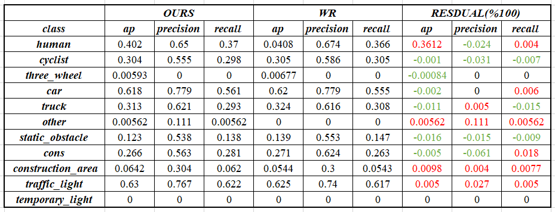
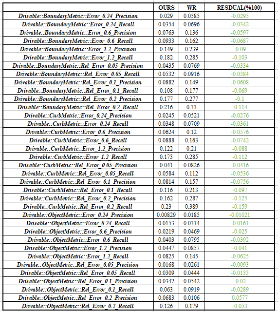
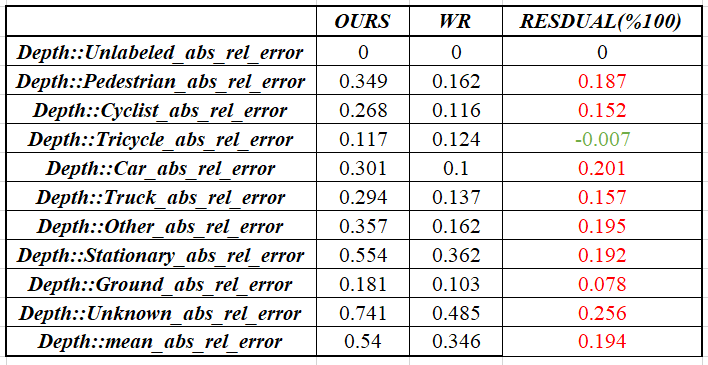
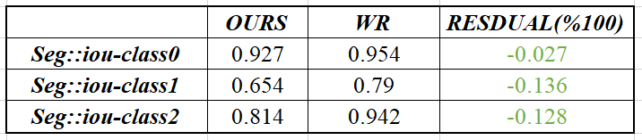

95_WR_MS4 Algorithm REPRODUCE [Final Acceptance Report]
80. Algorithm acceptance guidance from WR
For Training Code, because WR's verification is under/workspace, this mounting is specifically targeted at WR, and RB Per cannot be accessed.When RB Per's classmates are referenced and using the data address under this folder according to the user manual reappearing training code, the method of modifying the data address in the article has been given.
Package the training code of the corresponding module on BitBucket
Copy to your own duplication address
Modify the path of subset datasets in the corresponding file
Training and testing according to Manual
Compare test results for acceptance and acceptance
Different from the delivery with MS3 has been pointed out in the article, please pay attention to view
Zone code: Commit 7009EBFC63C9C6BE45873727E26813E7D8DFA4
1. Division name list
|
|
Task |
stackholders |
MS4 Key Update |
start time |
|
Model Train/Test Code White-Box Code |
Image View MTCNN |
@Wu Hairan @Ma Jinfeng @Sun Yangyang @Wang Yanan (Pay attention to how 3DHead is designed) |
|
wang yanan: 4/24 Sun Yangyang: 4/24 Wu hairan: to be determined Ma Jinfeng: To be determined |
|
BEV/Camera Prediction |
@Ge Shuyu @Deng Zhonghao |
|
ge shuyu: 4/25 deng zhonghao: to be determined |
|
|
Lane Detection |
@Yan Cheng @Wen Haoran |
No Update |
wen haoran: 4/25 yan Cheng: To be determined |
|
|
BEV/Lane Prediction |
@Li Tianyi @Zhu Xuanyu |
|
zhu xuanyu: 4/27 li tianyi: to be determined |
|
|
Traffic Light |
@Shang Yan @Guo Dashan |
|
Shang Yan: 4/26 Guo dashan: to be determined |
|
|
Traffic sign |
@wang cong @Li Chen |
|
wang cong: 4/18 li chen: 4/24 |
|
|
CarNet |
@Guo Dashan |
data and code no update |
guo dashan: 4/24 |
|
|
Road Marker |
@Yang Chen @Wang Cong (Traffic Sign Keypoint) |
|
wang cong: 4/18 yang chen: to be determined |
|
|
Image ODD |
@Yang Junyan |
|
yang junyan: 4/27 |
|
|
3D tracking |
@Xia Sijun |
No Update |
xia sijun: 4/25 |
|
|
Liper withebox 3D/Freespace |
@cheng changhao @Bi Yanguang /@Wang binyu (Main attention to Stagea & StageB full data training) |
Code No Update |
|
|
|
Lidar_ODD |
@cheng changhao @Bi Yanguang /@Wang binyu (Main attention to Stagea & StageB full data training) |
Code Black Box, Can not be checked |
|
|
|
Error Monitor Handling |
|
No Update |
|
|
|
Design Doc |
Low Level Design(same/update/new) |
@all stakeholders |
|
|
|
Labeling Doc |
Labeling Requirements(same/update/new) |
@all stakeholders |
|
|
2. Acceptance report
2.1. Image View MTCNN
reported by SUN Yangyang (XC-AS/PJ-WIN-PER2)
Acceptance situation
Duplication indicator
Target detection index

Freespace indicator

Segmentation indicator

Deep estimation indicator

The acceptance conclusion does not pass:
Due to the excessive acceptance data, the experimental results fluctuate
Design documents and instructions are not complete
Code running
suggestion
Model design document needs to be consistent with the code
The model design document needs a detailed instructions for the model processing of the model
The operation of the instruction manual can be realized
2.2. BEV/Camera Prediction
Reported by user-42e3d
Duplication indicator
Metric
WR_Reported
Reproduced
exp-1
exp-2
exp-3
exp-4
avg
exp-1
exp-2
exp-3
exp-4
avg
AVG indicator difference (%)
Detection_Precision
0.7112
0.7094
0.7064
0.7070
0.7085
0.7085
0.7078
0.7080
0.7064
0.7077
-0.11
Detection_Precision_L
0.4700
0.4688
0.4668
0.4670
0.4682
0.4685
0.4675
0.4679
0.4676
0.4679
-0.06
Detection_Recall
0.7299
0.7276
0.7255
0.7267
0.7274
0.7288
0.7282
0.7286
0.7256
0.7278
+0.05
ap
0.6728
0.6695
0.6662
0.6697
0.6695
0.6683
0.6702
0.6692
0.6680
0.6689
-0.09
apl
0.4679
0.4654
0.4630
0.4658
0.4655
0.4646
0.4652
0.4649
0.4650
0.4649
-0.13
Velocity_Mean_Error
1.7861
1.8772
1.8231
1.8891
1.8439
1.8125
1.8952
1.9927
1.8470
1.8867
+2.32
Velocity_Speed_Mean_Error
1.5386
1.6199
1.5763
1.6372
1.5930
1.5571
1.6392
1.7369
1.5917
1.6312
+2.40
Velocity_Heading_Mean_Error
0.3269
0.3385
0.3229
0.3350
0.3308
0.3316
0.3350
0.3408
0.3313
0.3347
+1.18
yaw4_Mean_Error
0.2456
0.2461
0.2465
0.2469
0.2463
0.2464
0.2465
0.2473
0.2464
0.2467
+0.16
yaw_Mean_Error
0.0901
0.0902
0.0900
0.0911
0.0904
0.0915
0.0905
0.0910
0.0922
0.0913
+0.99
Analysis: The average value of the A100 reappeared 4 times is compared with the various indicators of WR_Reported's 4 average. Except for Velocity_mean_Error, Velocity_Speed_mean_Error, Velocity_Mean_ERROR, the absolute error is higher than 1%. All within 1 percentage pointEssence
Experimental results: Small data set indicators can reproduce.
Acceptance conclusion: Fail
The document is inconsistent with the code (for example: 40 in the number of input channels, 41 in the training code, and 29 in AOS code)
The code can be executed and can reproduce the small data set indicator, but the stagea data cannot be reproduced
Code and MS3 No update
2.3. Lane detection
Reported by WEN Haoran (XC/PRM-CN)
Duplication indicator

Experimental conclusions: Stable in LANE and CURB task indicators can be recovered, and the recall rate in some tasks is low
The acceptance conclusion passed:
Due to excessive acceptance data, the experimental results fluctuated, and the subsequent large -scale data results of Reappear's evaluation are prevailing (DeCIDED by Lei)
The code is consistent with the document description, and it is exactly the same as the MS3
Code running
2.4. BEV/Lane Prediction
Reported by user-a0cc3
Duplication indicator
exp
precision
recall
mean endpoint error
mean classification accuracy
average presicion
wr_1
0.7060
0.6183
4.865
0.7393
0.5732
wr_2
0.7098
0.6162
4.747
0.7655
0.5800
wr_3
0.7094
0.6153
4.853
0.7441
0.5800
rb
0.7016
0.6147
4.877
0.7344
0.5689
Experimental conclusions: Basically, the indicators provided by the document can be reappeared. Each indicator is low, which may be caused by different card training BATCHSIZE, but the amplitude is small
Acceptance conclusions and acceptance passed
Code running: Training code can run.
Document and code consistency: Design doc and code are basically consistent
Duplication INDICATOR: Due to excessive acceptance data, the experimental results fluctuate, and the subsequent large -scale data results of Reappear are subject to
2.5. Traffic Light
Reported By SHANG Yan (XC-AS/PJ-WIN-PER2)
Reappear
-
model
Exp Results
Comments
tl_detector
Exp
Color Accuracy
Shape Accuracy
Digit type Accuracy
Digit Accuracy
Bulb color Accuracy
Bulb shape Accuracy
By Weride
97.88%
89.62%
99.4%
85.71%
90.32%
55.96%
Exp1
97.63%
88.51%
98.9%
82.14%
90.7%
54.77%
Exp2
97.46%
88.85%
98.98%
85.71%
90.61%
57.64%
Exp3
97.63%
89.53%
98.65%
82.14%
90.01%
57.68%
tl_decider
Exp
Accuracy
By Weride
93.54%
Exp1
93.80%
Exp2
93.54%
Exp3
93.64%
Stage B
in conclusion: Acceptance
Consistency of documents and code: The design doc and code are roughly consistent, and they are roughly consistent after being modified by Weride.
Code running: Training code can run.
Index of code reaping: The code reaping indicator has fluctuated, and the fluctuation is within the acceptable range. The specific differences are shown in the table.
2.6. Traffic Sign
Reported By WANG Cong (BCSC/EPA1, XC-AS/PJ-WIN-PER2)
Reappear
data set
Exp Results
Comments
Subset Dataset (5k/2k)
Exp
Accuracy
AP
AR
Average F1
By Weride
92.51%
82.6%
71.9%
74.73%
Exp1
92.08%
84%
70.35%
73.17%
Exp2
92.88%
89.73%
75.76%
79.65%
Exp3
92.78%
85.72%
75.1%
77.91%
Stage A
Stage B
Model design and DAG: 95_WR MS4 TrafficSign Classification
Existence ： 95_issuses [Record of acceptance issues]
in conclusion: Can't pass the acceptance
Consistency of documents and code: DESIGN DOC and code are inconsistent, and there are still inconsistencies after modification by Weride.
Code running: Training code can run.
Index of code reaping: The code reproduction indicator fluctuates.The specific differences are shown in the table.
2.7. CarNet
Because Carnet@MS4 code itself is not updated, it is essentially a few experiments, and the results given in the document:
For specific indicators, you can directly read the MS3 acceptance report WR_MS3(T0+6) Checks - PJ-W3-PER - Docupedia (bosch.com)；
Although the indicator of the MS4 code can be aligned with the previous MS3 results, it has little significance;
The model design part (such as the classification HEAD) in the document is not exactly the same as the code, and the meeting has been communicated before;
The problem has been recorded 20230506 - Wave 3 RB & WR Cooperation - Confluence (atlassian.net)；
It also includes parts with inconsistencies after AOS. Wen Yuan replied uniformly in the next MS5 to give a consistent version;
So the conclusion of this acceptance: No pass!
2.8. Road Marker
Reported By WANG Cong (BCSC/EPA1, XC-AS/PJ-WIN-PER2)
Reappear
data set
Exp Results
Comments
Subset Dataset (4k/1k)
Exp
mean-iou
01_iou
02_iou
03_iou
04_iou
05_iou
06_iou
07_iou
08_iou
By Weride
0.346
0.533
0.630
0.333
0.476
0.222
0.013
0.369
0.190
0.339
0.526
0.625
0.325
0.441
0.158
0.001
0.365
0.271
0.356
0.525
0.630
0.321
0.491
0.192
0.004
0.365
0.317
Exp1
0.348
0.530
0.625
0.314
0.465
0.175
0.007
0.351
0.315
Exp2
0.359
0.531
0.632
0.324
0.473
0.204
0.054
0.333
0.324
Stage A
Stage B
Model design and DAG: 95_WR MS4 Road Marker
Existence ： 95_issuses [Record of acceptance issues]
in conclusion: Can't pass the acceptance
Document and code consistency: Weride does not provide verification set indicators for the DETECTION mission.
Code running: semantic segmentation code can run, the Detection module Evaluation code cannot be operated.
Index of code reaping: The code reproduction indicator fluctuates.The specific differences are shown in the table.
2.9. Image ODD
YANG Junyan (XC-AS/PJ-WIN-PER1)
Reappear
-
normal_weather
rainy
snowy
foggy
light
sunlight
carlight
water
snow
overexposure
dark
occlusion
fog
moving_blurry
other_blurry
roadtype
water_splash
construction
trafficlight
obstacal
pavement
rb_local
0.634102
0.22220664
0.0
0.19045985
0.267328
0.21051158
0.17542382
0.23807935
0.0
0.20124306
0.25755876
0.0
0.0
0.0
0.0
0.41666597
0.19606413
0.48175174
0.2167341
0.23021503
0.1634505
wr_exp1
0.68
0.58
0
0.19
0.447
0.27
0.1754
0.2380
0
0.19
0.257
0
0.344
0
0.333
0.27
0.226
0.279
0.2254
0.29
0.203
-
Existence 95_issuses [Record of acceptance issues]
Conclusion: The acceptance cannot be passed
Code running
The indicator is not right
Some key attributes RB and WR test F1 are 0, not acceptable.
2.10. Liper3D Whitebox
Reported by CHENG Changhao (XC-AS/PJ-WIN-PER2)
LIPER3D WhiteBox code is not updated, CODE acceptance conclusion is the same as MS3 acceptance report WR_MS3(T0+6) Checks - PJ-W3-PER - Docupedia (bosch.com)；
Stagea data: 0525 can be available after the subcontracting. The total delivery amount is unknown. It cannot be used directly for white box model training.
Conclusion of acceptance: If Stagea data is trained as the standard for this acceptance, then Can't pass.
2.11. 3D tracking
Tracking currently does not have a mirror that can be run, there is no acceptance indicator, and the MS5 is provided by MS5.
Model design and DAG: 95_WR MS4 3D tracking
Conclusion: The acceptance cannot be passed
Code cannot be running
No corresponding indicators